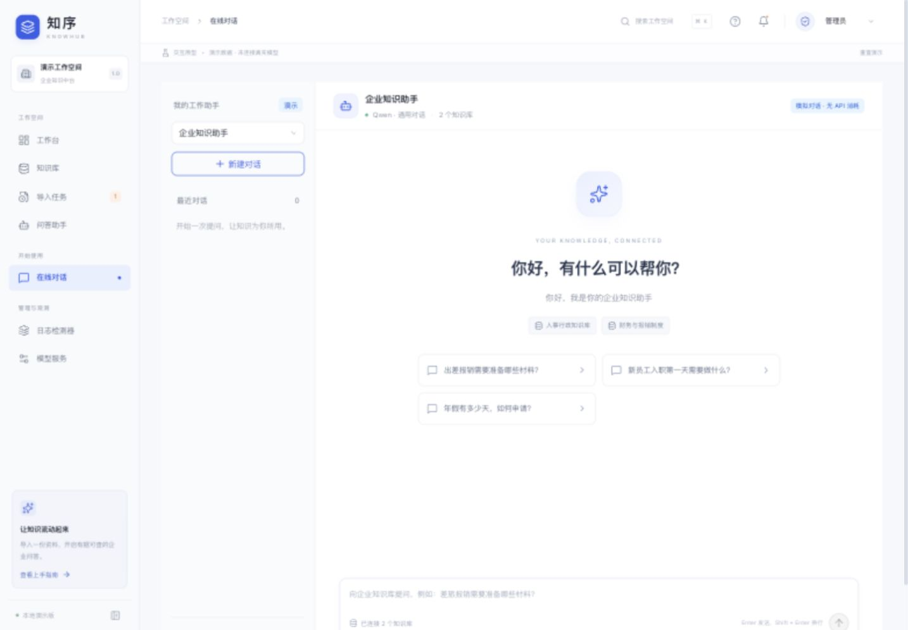
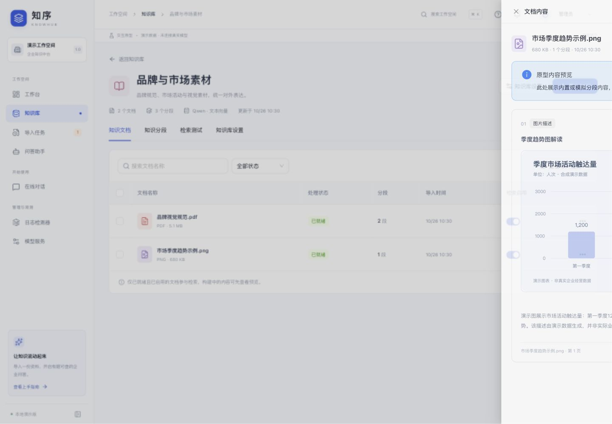
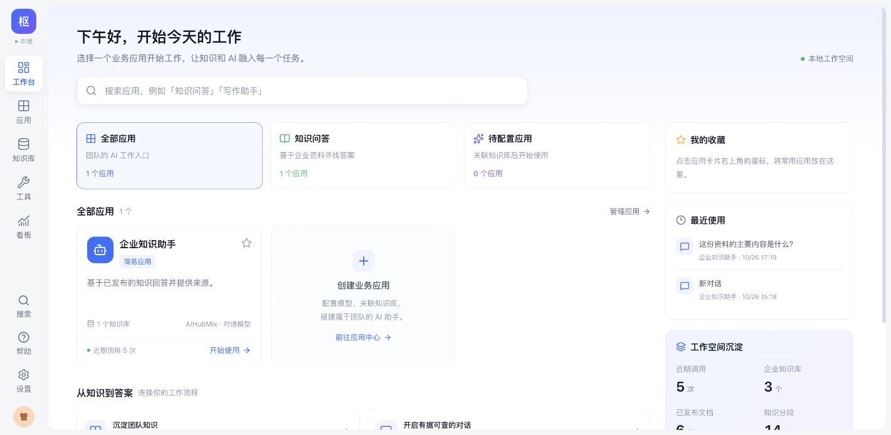

知识库与九种切块
文件、网页、文本统一导入；按格式推荐切块方式，逐文件预览并调整。支持标题、固定长度、分隔符、按页、表格、QA、父子块与语义等九种策略。
FEATURES
不是只会聊天的套壳，而是把「知识—应用—评测—发布—观测」串成可复用的中台能力。
文件、网页、文本统一导入；按格式推荐切块方式，逐文件预览并调整。支持标题、固定长度、分隔符、按页、表格、QA、父子块与语义等九种策略。
全文检索无需模型即可用；配置 Embedding 后开启语义与混合检索。支持重排、阈值、初召回与重排后保留数量，并可一键写入引用本库的应用。
从模板、空白或 AI 辅助创建简易应用与 Agent；可视化编排开始、检索、模型、条件分支、工具调用与输出节点，草稿自动保存并可独立调试。
手工新增、AI 设计或从 Trace 回流 Good / Bad Case；设置必须包含、禁止出现、引用与期望输出等标准。门禁不通过，不允许发布。
检索、模型、工具与护栏 Trace，耗时、Token、费用和反馈一屏可见；把问题一键回流为 Case，修复后回归、再发布。
管理员 / 知识管理员 / 业务使用者分权；API Token 按 scope 授权。知识库检索可被外部 AI Work 应用直接调用，返回片段、出处与页码。
INTERFACE
沿用紫色工作台视觉，支持浅色、深色与跟随系统；已完成桌面、平板与手机宽度验收。



ARCHITECTURE
默认单机部署：React 前端、FastAPI 后端、SQLite 与本地文件；需要规模化时保留 PostgreSQL + pgvector / Redis / S3 的 Docker 配置。
知识库、导入向导、应用编排、评测集、看板与设置。TypeScript 严格构建，接口统一走 /api。
检索、切块、解析、评测、发布版本、Trace 与权限校验；OpenAPI 文档随服务提供。向量化、重排、OCR 受云端处理开关约束。
知识库、分块、应用版本与评测记录落在本机数据库；上传文件保存在本地目录。密钥独立加密，可随时关闭云端处理。
WORKFLOW
文件、网页或文本进入知识库，解析结果可逐文件核对。
按格式选择策略与参数，确认哪些分块可被检索。
创建应用 / Agent / Chat Flow，绑定知识库与工具。
用明确判定标准跑 Case，Good / Bad 有据可查。
门禁全部通过才生成不可变版本，可下线与回滚。
Trace、耗时、Token 与费用回流问题，再回归。
QUICK START
需要 Python 3.11–3.13、Node.js 22.12+ 与 pnpm。首次准备环境后，双击启动脚本或执行命令，打开 127.0.0.1:4173。
GitHub Pages 只能托管静态页面；本页是项目展示，真实问答、检索与发布请在本机运行。
# 首次准备
python3 scripts/setup-local.py
# 启动（自动打开浏览器）
python3 scripts/start-local.py --open
# 已有旧版资料时迁移
python3 scripts/migrate-local.py
# 仅启动 API，查看 OpenAPI
$ python3 scripts/start-local.py --backend-only
→ http://127.0.0.1:8001/docs这里展示的是项目界面与能力说明，截图使用演示数据。完整系统需要在本机运行 FastAPI 后端与数据库，GitHub Pages 无法执行后端代码，也不会保存任何资料。项目基于 chusimin/zhishu-rag-platform 的功能基线做本地增强实现。